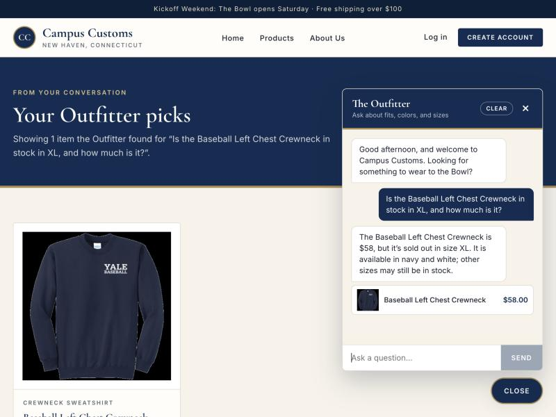
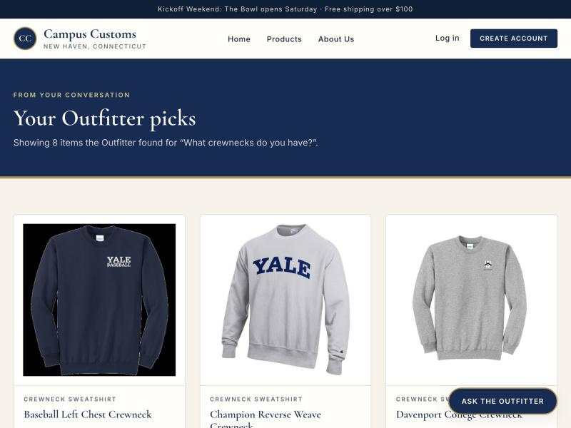
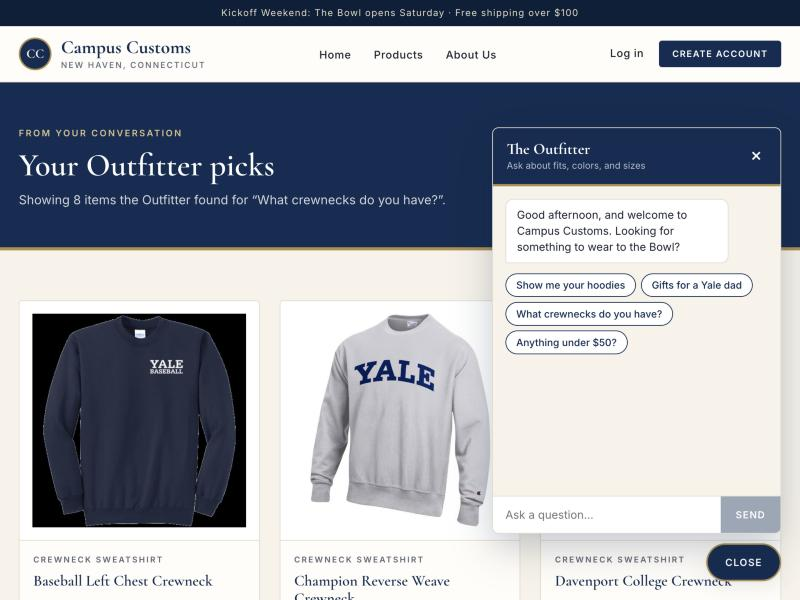

Check 1
Chat reports real inventory & price from the database

What this proves: Asked whether the Baseball Left Chest Crewneck is
available in XL, the Outfitter answers $58 and sold out in size XL — the
exact price and stock from campus_customs.db (XL quantity is 0), not an
invented reply. It even shows the matching product card.
Check 2
A category question dynamically fills the page with product cards

What this proves: Asking "What crewnecks do you have?" in the chat drove the storefront to show 8 matching crewneck cards, with the heading "Showing 8 items the Outfitter found for 'What crewnecks do you have?'" — confirming the cards came from the chat search. Each card links to its single-item product page.
Check 3
Usability: Clear chat restores the starter suggestions

What this proves: After a conversation, the Clear button resets the chat to the greeting and the four starter suggestion chips reappear — so a shopper can start a fresh line of questions and is re-shown what they can ask.